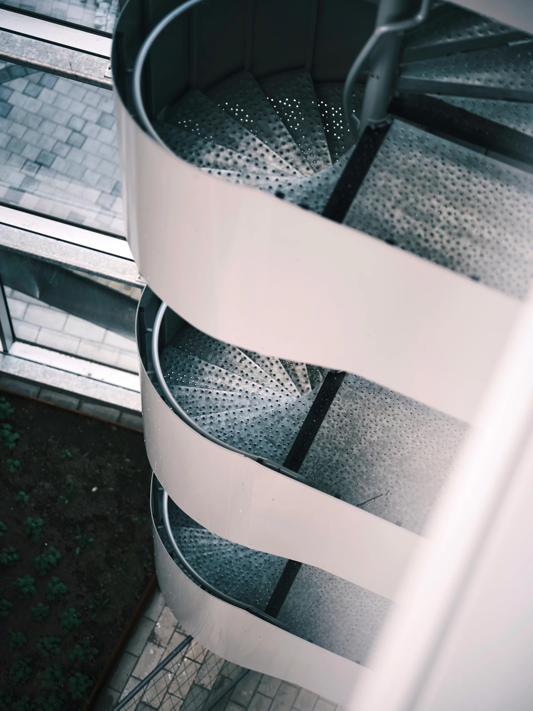

Ansvar i det stora.
Omsorg i det dagliga.
Miljö, material och människor hör ihop i ett byggprojekt. BYGR arbetar för att utveckla verksamheten med dessa perspektiv som en del av vardagen.

Miljöarbetet
Vi prioriterar miljöaspekter i arbetet och följer den miljölagstiftning som är relevant för verksamheten. Målet är att utveckla och förbättra arbetssätten över tid.
Återvinning och material
BYGR arbetar för att minska avfall, återanvända material där det är möjligt och hantera återvinning på ett korrekt sätt.
Arbetsmiljö
Arbetet ska ge förutsättningar för medarbetare att trivas, utvecklas och känna trygghet. Den fysiska, organisatoriska och sociala arbetsmiljön är delar av samma ansvar.
Respekt och inkludering
BYGR har nolltolerans mot mobbning och trakasserier. Öppenhet, jämlikhet och respekt ska prägla arbetsplatsen.
Projektens miljökrav
Miljökrav och certifieringar hör till det enskilda uppdraget. Projektbeskrivningarna återger de uppgifter BYGR har publicerat, utan att göra en generell certifieringsutfästelse för hela verksamheten.